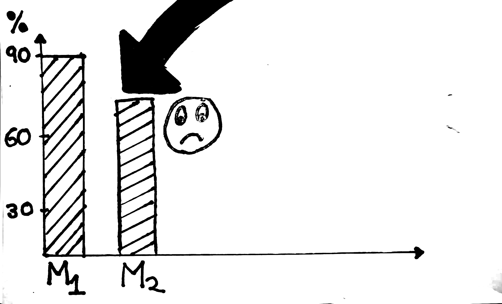

Frankie spent 10,000 $ in developing the product and additional 2000 $ to market it.
Post-Future made a great start with 10000 users signing up in first month. Only 500 users cancelled there subscription in first month.

User Retention Rate - First Month

Frankie and his team were busy celebrating early success.
The success was not long lived as user retention rate fell down after second month. There were bad reviews by users as well.
User Retention Rate - Second Month

Frankie should find where the problem is instead of spending more money on Marketing.
If we call a wrong number we will not get the answer we are looking for.
Lets keep going.

Frankie looked at the reviews posted by users and spoke with users and majority of issues fell into following categories:
- Product was difficult to use and understand
- There were so many steps to accomplish a simple task
- Sign up process was difficult and they gave up

User Retention Rate - Sixth Month
As users stopped paying for subscription it was difficult to manage costs of server.
Frankie found it extremely hard to manage cash flow.

Cash Burn Rate
Frankie was forced to look into cash burnt from the beginning
Despite spending so much money chances of winning were getting weak.

Frankie burned so much of cash that it was impossible to recover.
Most of the angel investors turned down his request and he didn't get any funding.
Frankie was forced to shut down his company.

Frankie was upset by his failure but deep inside he wanted to make a comeback.
He decided to share his story with his trusted college friend Keith.
Keith recently launched a ecommerce startup Flipmart which recently secured a series C funding.

Frankie and Keith sat for a while they reminisced old college days.
Afterwards Frankie shared the story with Keith about what wrong with "Post-Future"
Keith spent few minutes pondering
what could have went wrong.
Keith pointed out that the problem lies in the early stage i.e. start of the the product and in the later stage where you ended up spending a lot of money.

A startup is a team which works together.

To build a product and ship it to there customers.
The startups which had great stories of success in recent years followed a design process to ensure they are creating something that user wants.
Mostly people think that design is how it looks but its much deeper, its how it works.

After talking to user we define the problem from the point of view of our customer.

Team brainstorms together and selects right idea(s) to solve the problem.

A prototype based on the idea is created.

Its good to fail in design phase because you havent developed your product yet. Remember prototyping is cheap.
People dont buy product they buy experiences, its important that we work hard to create those experiences.

This brought smile into Frankies face, he thought that this is something he missed while building "Post-Future".
He thanked Keith for the guidance and moved on.

Determined with the problem statement he thought this is something he can give life to.
He first step was customer research by interviewing them.

During customer inteview Frankie figured out that none of the users were aware of checkout issue.
But they were finding it extremely hard to shop groceries through existing apps like "ZonNow" and "SmallBasket".

After interviewing they all got together and created a wall full of findings.
They organized data into groups. Using which they were able to understand needs, ,likings and frustrations of users they interviewed.

They all sat together for an Ideation session.
There were many ideas but the Idea which got most of the votes was "Adding the item will place the order directly"

This idea sounded great but there wasn't clarity on when to charge customers
- They came up with two ideas :

Both the ideas were prototyped and team started it testing with users.
Frankie and his team were convinced by looking at usability tests it would work. He named his app as "DailyBasket"

While developers worked hard, Frankie did all the tie ups for grocery delivery.
Since all the designs were in place, it took development team less time to build the app.

Customers liked the app because there was no checkout, it saved time for them. They started becoming habitual to DailyBasket because it made there life easy.

todo
Stories of Startup failure are very common.
Want to know more details about how you can utilize "User Experience Design Process" to win - Click here.